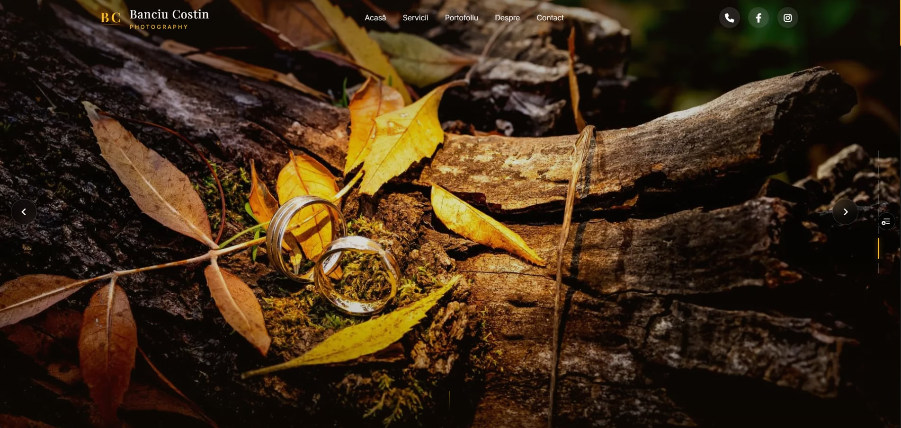
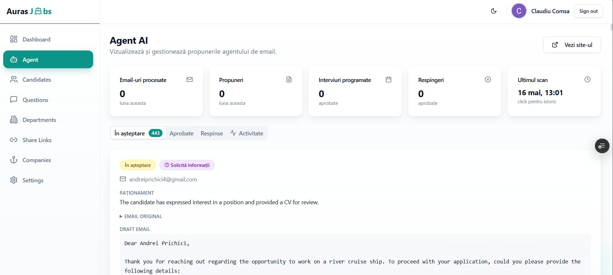
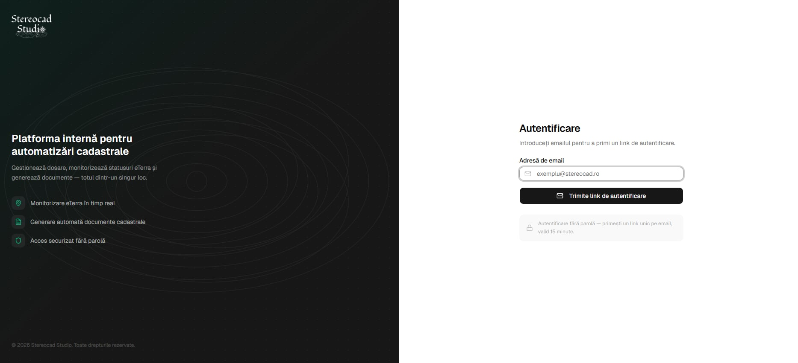

2026 · live

Înainte de cod, există o întrebare.
Construiesc lucruri pe care le-aș folosi eu însumi.
Lucrez la intersecția dintre design și cod. Îmi place când un produs digital simte uman —
când un click are sens, când o animație nu deranjează, când o pagină se încarcă atât de
rapid încât uiți că e o pagină.
Câțiva ani din viața mea, condensați în pixeli. Restul, în întrebări.
Trei proiecte recente unde codul, designul și o atenție obsesivă la detaliu au produs ceva care merită arătat. Scroll pentru a le explora →



Mai multe proiecte vin curând.
scrie-mi →